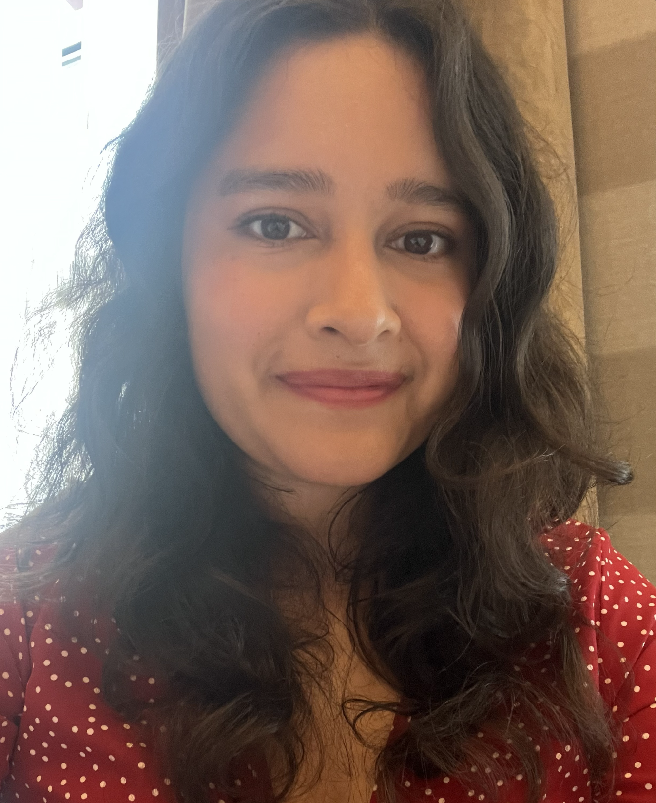

Claudia Banda Marin

Summary
Education
- Bachelor of Education - P/J program (OCT # 693671) | June 2019
York University, Toronto, Ontario
- Additional Qualification - ESL Part 1 | March 2022
- ABQ Senior – Dramatic Arts | July 2021
- ABQ Intermediate - Dramatic Arts | July 2020
- Additional Qualification - Spec Ed Part 1 | July 2019
- Bachelor of Arts, Honours Psychology | July 2015
University of Guelph, Guelph, Ontario
Work Experience
Primary to Intermediate Gifted Homeroom Teacher
Various Schools | February 2023 - June 2024
Data-Driven Decision Making:
- Used diagnostic tools to assess student performance before, during, and after learning to improve performance.
- Developed cross-curricular materials to maintain engagement and cater to diverse learning needs, including OCD, ADHD, and Autism Spectrum Disorder.
Project Management:
- Led the student council and raised over $6,000 through student initiatives.
- Organized and executed events, including a large-scale Pride activity event for 800+ students.
- Managed multiple classroom and school-wide projects, prioritizing tasks and ensuring timely completion and alignment with objectives.
Collaboration and Communication:
- Served as a liaison and collaborated with the parent council, administrations, and other stakeholders, fostering positive relationships and ensuring alignment with school goals.
- Mentored a Master's student from OISE, University of Toronto, during her practicum, guiding her teaching development from 0% to 50% classroom responsibility.
Technology Integration:
- Used AI tools for lesson planning, student feedback, material development, and data analysis to enhance instructional outcomes.
Creator, Learning Pods GTA
Greater Toronto Area | August 2020 - December 2021
Community Building:
- Founded and grew a 2,000+ member community to connect families and educators facing school closures during the COVID-19 pandemic.
- Used polls and targeted questions to identify and respond to member needs, ensuring the community was aligned with user preferences.
Engagement and Strategy:
- Continuously refined engagement strategies based on feedback and data.
Occasional Teacher
Toronto District School Board & York Region District School Board | April 2019 - Present
Adaptability in Ambiguous Environments:
- Quickly adapted to diverse environments and teaching styles across multiple schools.
- Managed priorities and expectations, often with minimal preparation time.
Rapid Team Integration:
- Demonstrated flexibility and strong interpersonal skills to join new teams daily, building rapport with students, and staff.
Prioritizing and Problem Solving:
- Prioritized tasks to manage classroom dynamics, maintain order, and ensure lesson objectives were met.
- Used creative problem-solving to handle unexpected challenges, such as technology issues or student behavior, in real-time.
Skills
-
Technical Proficiency: Experienced in using Figma for UI/UX design, with case studies involving Teachers Pay Teachers (TPT), Google Classroom, and Google Translate.
- Analytical & Data-Driven: Strong analytical skills in using data to drive decisions and improve user engagement.
- Bilingual Communication: Fluent in English and Spanish.
- Adaptability & Problem Solving: Comfortable working in fast-paced, ambiguous environments and solving problems under pressure.
- Growth Mindset: Enthusiastic learner with a passion for innovation and continuous improvement.
Other
Other Work Experience
Contact Me